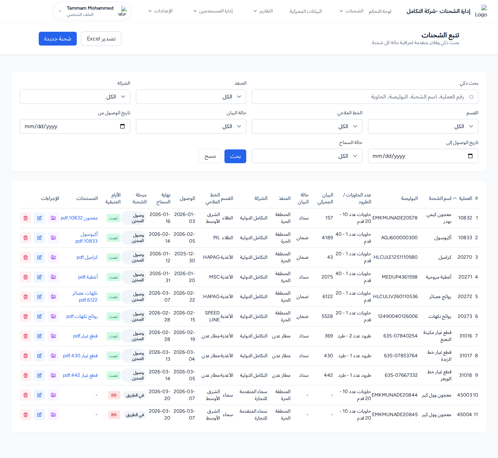
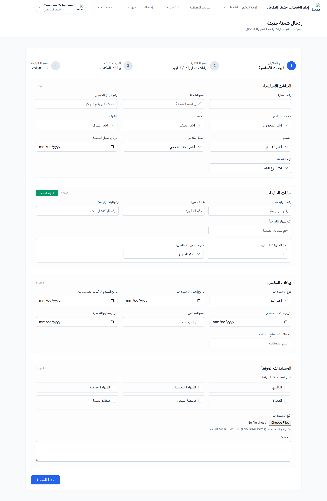
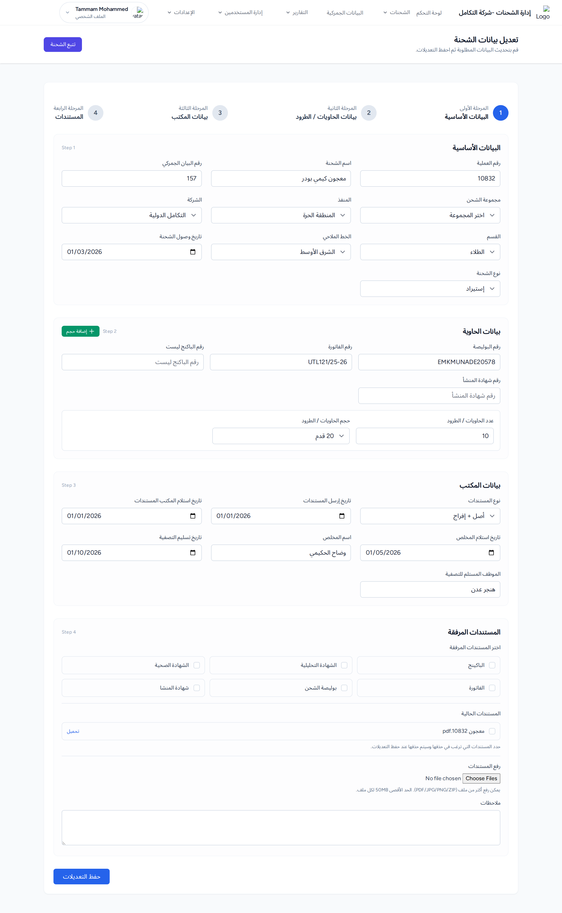
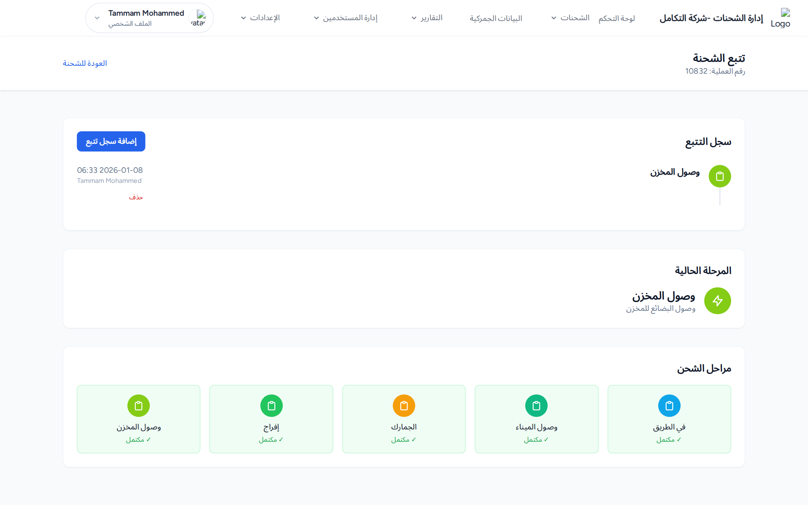
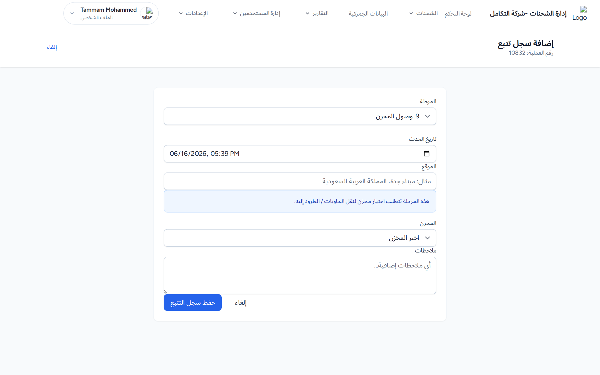

1. القائمة والبحث
تعرض الصفحة جدول الشحنات مع بحث ذكي وفلاتر (المنفذ، الشركة، القسم، الخط الملاحي، حالة البيان، تاريخ الوصول، حالة السماح).
- عبّئ الفلاتر ثم اضغط بحث (أو مسح لإعادة الضبط).
- افرز بالضغط على رأس عمود العملية أو الوصول.

قائمة الشحن البحري: حقل البحث الذكي والفلاتر، عمود «الأيام المتبقية» الملوّن، أزرار الإجراءات (تتبع/تعديل/حذف)، وزرّا «تصدير Excel» و«شحنة جديدة».
عمود الأيام المتبقية ملوّن: أخضر (متاح)، برتقالي (قرب الانتهاء 0–3 أيام)، أحمر (منتهٍ) أو «تمت». ويعرض عمود المستندات روابط تنزيل المرفقات.
المخرجات المتوقعة: يتحدّث الجدول ليعرض الشحنات المطابقة، 50 شحنة في كل صفحة.
2. إضافة شحنة جديدة
اضغط شحنة جديدة. النموذج من 4 خطوات (الحقول بعلامة * إلزامية):
الخطوة 1 — البيانات الأساسية
رقم العملية *، اسم الشحنة *، رقم البيان الجمركي، مجموعة الشحن، المنفذ *، الشركة *، القسم، الخط الملاحي، تاريخ الوصول، نوع الشحنة *.
الخطوة 2 — بيانات الحاوية
رقم البوليصة *، رقم الفاتورة، الباكنج ليست، شهادة المنشأ، وصفوف أحجام الحاويات (عدد + حجم: 20/40/40HC/45 قدم أو طرد). زر إضافة حجم لإضافة صف.
الخطوة 3 — بيانات المكتب
نوع المستندات، وتواريخ الإرسال والاستلام والتسليم، واسم المخلّص والموظف المستلم.
الخطوة 4 — المستندات المرفقة
اختيار أنواع المستندات، رفع ملفات (PDF/JPG/PNG/ZIP بحد 50م.ب للملف)، وملاحظات. ثم اضغط حفظ الشحنة.

نموذج إضافة شحنة بحرية، مع إبراز الحقول الإلزامية في «البيانات الأساسية».
المخرجات المتوقعة: رسالة «تم حفظ الشحنة بنجاح وتم احتساب فترة السماح تلقائياً»، ويُعاد فتح نموذج فارغ. وعند الأخطاء يظهر صندوق «يرجى تصحيح الأخطاء التالية» مع الاحتفاظ بما أدخلته.
3. التعديل والحذف والتصدير
- تعديل: أيقونة التعديل تفتح النموذج بالبيانات الحالية؛ في الخطوة 4 يظهر قسم «المستندات الحالية» لتحديد ما يُحذف، ثم حفظ التعديلات.
- حذف: أيقونة الحذف الحمراء ثم التأكيد.
- تصدير Excel: يصدّر الشحنات المطابقة للفلاتر الحالية.

نموذج تعديل الشحنة معبّأً بالبيانات وزر «حفظ التعديلات».
المخرجات المتوقعة: «تم تحديث الشحنة بنجاح» (تعديل) أو «تم حذف الشحنة بنجاح» (حذف) والعودة إلى القائمة.
4. تتبّع الشحنة
من أيقونة تتبع في صف الشحنة. تعرض الصفحة الخط الزمني لسجل التتبّع، المرحلة الحالية، وشريط كل المراحل (✓ مكتمل / ● الحالي / ○ قادم).

صفحة تتبّع الشحنة: الخط الزمني، المرحلة الحالية، وشريط المراحل.
إضافة سجل تتبّع
- اضغط إضافة سجل تتبع واختر المرحلة.
- حدّد تاريخ الحدث والموقع.
- إن تطلّبت المرحلة حاويات أو مخزناً تظهر الحقول المناسبة (إلزامية حينها).
- أضف ملاحظات ثم اضغط حفظ سجل التتبع.

نموذج «إضافة سجل تتبع»: قائمة المرحلة، تاريخ الحدث، والحقول الشرطية للحاويات/المخزن.
المخرجات المتوقعة: «تم إضافة سجل التتبع بنجاح». ملاحظة: لا تُكرَّر المرحلة نفسها في اليوم نفسه، ولا يتجاوز عدد الحاويات العدد المتبقّي.